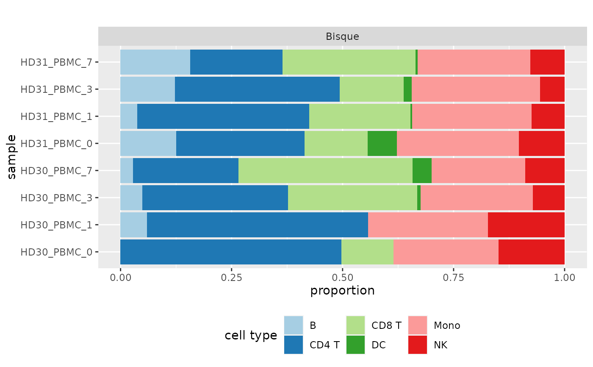

Plot deconvolution results as a barplot
make_barplot(result_list, title = "", file_name = NULL)the ggplot object
data("single_cell_data_1")
data("cell_type_annotations_1")
data("batch_ids_1")
data("bulk")
data("RefData")
common_genes <- intersect(rownames(single_cell_data_1), rownames(bulk))[1:2000]
single_cell_data <- single_cell_data_1[common_genes, 1:500]
cell_type_annotations <- cell_type_annotations_1[1:500]
batch_ids <- batch_ids_1[1:500]
bulk <- bulk[common_genes, ]
deconvolution <- deconvolute(
bulk, NULL, "bisque", single_cell_data,
cell_type_annotations, batch_ids
)
deconvolution <- list(deconvolution)
names(deconvolution) <- "Bisque"
make_barplot(deconvolution)
